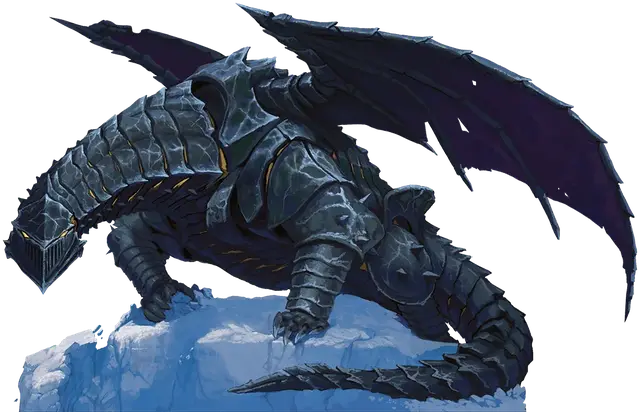

Чардалиновый дракон
Chardalyn Dragon
Огромный Конструкт, хаотично-злой

Класс Доспеха 17 (природный доспех)
Хиты 147 (14к12 + 56)
Скорость 30 футов, летая 90 футов
| мод | спас | ||
|---|---|---|---|
| СИЛ | 24 | +7 | +11 |
| ЛОВ | 11 | +0 | +0 |
| ТЕЛ | 19 | +4 | +8 |
| мод | спас | ||
|---|---|---|---|
| ИНТ | 10 | +0 | +0 |
| МДР | 10 | +0 | +0 |
| ХАР | 3 | −4 | −4 |
Сопротивление урону излучение; дробящий, колющий, рубящий от немагических атак
Иммунитет к урону холод, яд
Иммунитет к состояниям испуг, истощение, окаменение, отравление, очарование, паралич
Чувства тёмное зрение 120 футов, пассивное Восприятие 10
Опасность 11 (7200 опыта)
Бонус мастерства +4
Особенности
Языки. Все языки своего создателя.
Неизменяемая форма. Дракон обладает иммунитетом ко всем заклинаниям и эффектам, изменяющим его форму.
Сопротивление магии. Дракон совершает с преимуществом спасброски от заклинаний и прочих магических эффектов.
Осадное чудовище. Дракон причиняет двойной урон предметам и строениям.
Необычная природа. Дракону не нужен воздух, еда, питьё и сон и он не получает никакой выгоды от короткого или продолжительного отдыха.
Действия
Мультиатака. Дракон использует своё «Зловещее присутствие». Затем он совершает три атаки: две когтями и одну хвостом. Если дракон не летит, то может также совершить одну атаку крыльями.
Когти. . Рукопашная атака оружием: +11 к попаданию, досягаемость 5 фт., одна цель. Попадание: 14 (2к6 + 7) рубящего урона.
Хвост. . Рукопашная атака оружием: +11 к попаданию, досягаемость 10 фт., одна цель. Попадание: 18 (2к10 + 7) дробящего урона.
Крылья. . Рукопашная атака оружием: +11 к попаданию, досягаемость 10 фт., одна цель. Попадание: 12 (2к4 + 7) дробящего урона.
Зловещее присутствие. Любое существо со значением Интеллекта 4 и более, находящееся в пределах 30 футов от дракона должно совершить спасбросок Мудрости Сл 16, иначе станет очарованным драконом на 1 минуту. Существо может повторять спасбросок в конце каждого своего хода, оканчивая на себе действие этого эффекта при успехе. В случае удачного спасброска или окончания действия эффекта, существо становится невосприимчиво к «Зловещему присутствию» дракона на следующие 24 часа.
Существо, очарованное таким образом, выбирает целью существо или объект, которое мысленно выбрал дракон и должно в каждый свой ход перемещаться как можно ближе к своей цели и использовать действие для совершения рукопашной атаки. Если дракон не выбрал цель, очарованное существо может действовать в свой ход обычным образом.
Дыхание излучением (перезарядка 5–6). Дракон испускает энергетический луч линией длиной в 120 футов и шириной 5 футов. Все существа в этой линии должны совершить спасбросок Ловкости Сл 16, получая 31 (7к8 )урона излучением при провале, или половину этого урона при успехе.
Описание
Этот конструкт собран из кусков чардалина и выглядит как дракон. Единственные не выкованные из чардалина части — это его крылья, сделанные из прочной как резина маслянистой пленки и его сердце, представляющее собой шар пульсирующей сияющей энергии. Демоническая магия чардалина наполняет конструкта злобой, позволяя ему наслаждаться ужасом, который он вызывает. Этот эффект распространяется вовне, оскверняя тех существ, что подошли к дракону слишком близко. Те, на кого влияет присутствие дракона, направляют свои усилия на то, чтобы помочь дракону причинить страдания другим.
Чардалиновый дракон служит тиранической воле своего злого создателя — неутомимой страсти, превосходящей его собственный инстинкт самосохранения. Таким образом, дракон при необходимости уничтожит себя в погоне за желаниями своего хозяина. Дракон любит рвать врагов на части, а также вышибать двери и сносить другие сооружения. Во врагов, которых он не может достать, он выпускает разрушительный луч из своей похожей на решетку пасти.